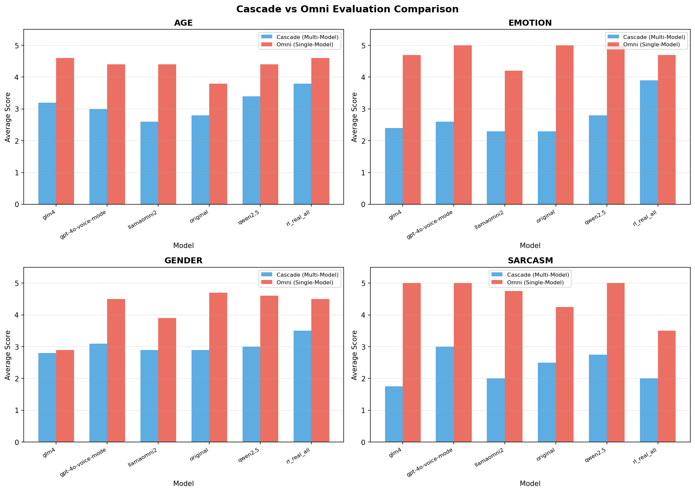
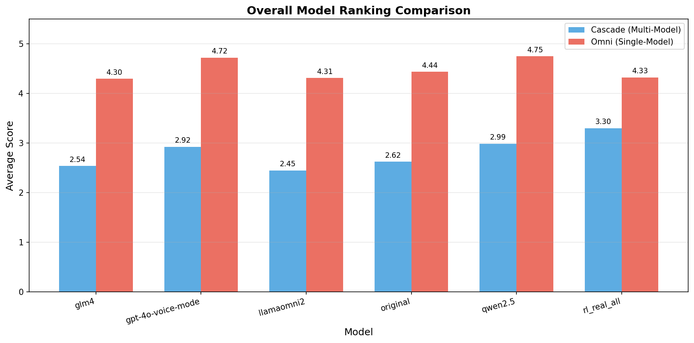
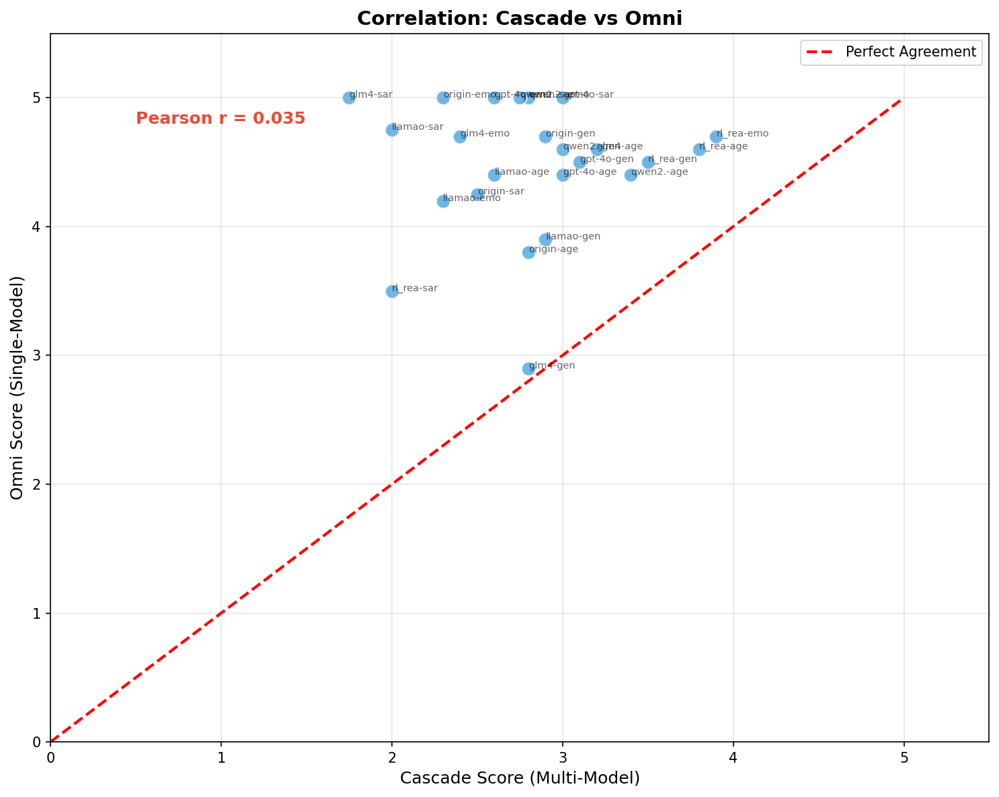
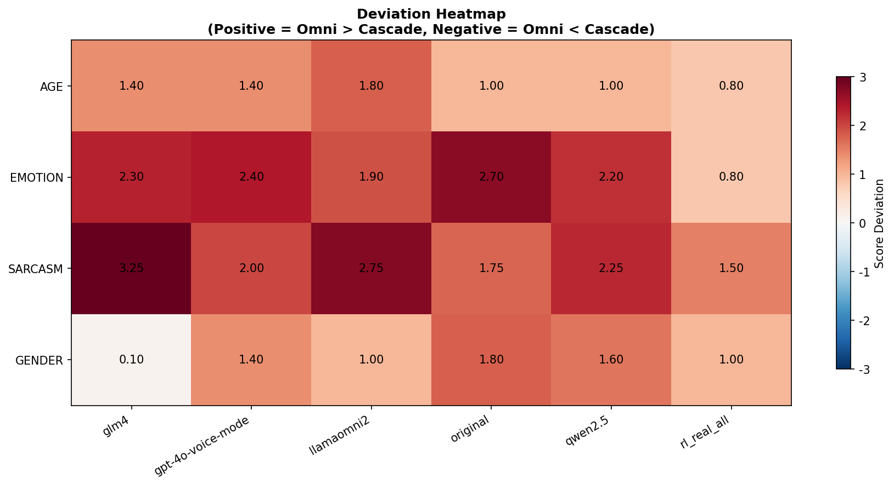
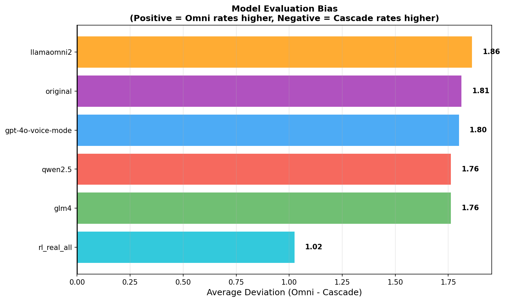

| Category | Filter Rule | Cascade Avg | Omni Avg | Deviation | Interpretation |
|---|---|---|---|---|---|
| AGE | 仅考虑 littlekid (child) 样本 | 3.13 | 4.37 | +1.23 | Omni higher |
| EMOTION | 排除 happy 和 surprised | 2.72 | 4.77 | +2.05 | Omni higher |
| SARCASM | 仅统计 sarcastic 标签样本 | 2.33 | 4.58 | +2.25 | Omni higher |
| Model | Cascade Avg | Omni Avg | Deviation | Tendency |
|---|---|---|---|---|
| glm4 | 2.54 | 4.30 | +1.76 | Over-rated by Omni |
| gpt-4o-voice-mode | 2.92 | 4.72 | +1.80 | Over-rated by Omni |
| llamaomni2 | 2.45 | 4.31 | +1.86 | Over-rated by Omni |
| original | 2.62 | 4.44 | +1.81 | Over-rated by Omni |
| qwen2.5 | 2.99 | 4.75 | +1.76 | Over-rated by Omni |
| rl_real_all | 3.30 | 4.33 | +1.03 | Over-rated by Omni |